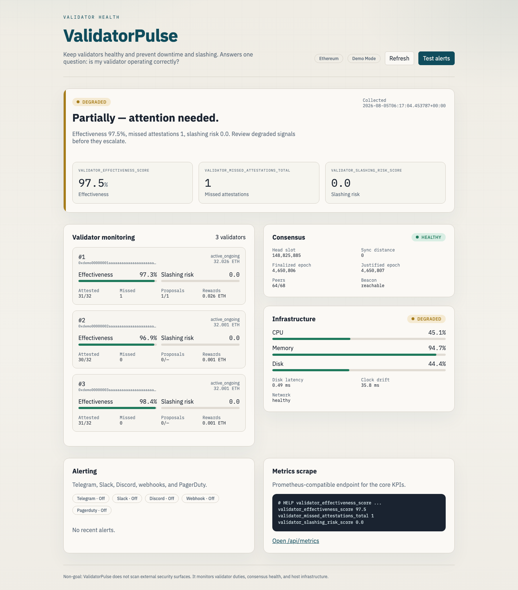

Validator health
ValidatorPulse
Self-hosted validator monitoring for Ethereum, Polkadot, Cosmos, Solana, and more — Prometheus metrics and multi-channel alerts.
Supported chains
- Ethereum
- Polkadot
- Cosmos
- Solana
- NEAR
- Cardano
- Tezos
- Algorand
- BSC
- Aptos
- Sui
- Monad
- Avalanche
- Mina
- MultiversX
- TON
Dashboard

Install
Python 3.11+. Demo mode needs no node. One CHAIN per process. Full checkout and Docker Compose steps are in the README.
python3 -m venv .venv && source .venv/bin/activate pip install validator-pulse CHAIN=ethereum DEMO_MODE=true validator-pulse
Open http://127.0.0.1:3000.